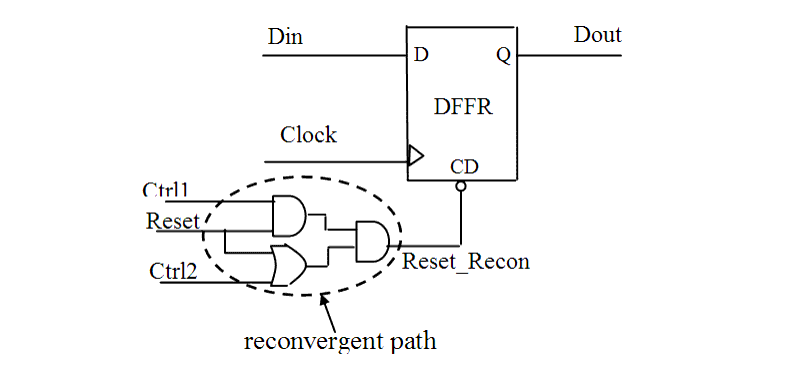

| Description | This rule fires when Leda detects a reconvergent path on a reset tree. A net that branches into two different gates and converges again can produce a reconvergent path. This can result in an uncontrollable initial state of a flip-flop. To avoid sequence errors in the design, remove such paths. |
| Policy | DESIGN |
| Ruleset | RESETS |
| Language | VHDL/Verilog |
| Type | Hardware |
| Severity | Error |
This is an example of invalid Verilog code, followed by a circuit diagram that illustrates the problem:
module ntl_rst16_top (Clock, Reset, Din, Dout);
input Clock, Reset, Din;
output Dout;
reg Dout;
wire Reset_recon, Reset_temp1, Reset_temp2;
wire Ctrl1, Ctrl2;
...
assign Reset_temp1 = Reset ^ Ctrl1;
assign Reset_temp2 = Reset & Ctrl2;
assign Reset_recon = Reset_temp1 | Reset_temp2;
// NTL_RST16 fires -- reconvergent path on reset tree
always @(posedge Clock)
begin
if (!Reset_recon)
Dout <= 0;
else Dout <= Din;
end
endmodule
